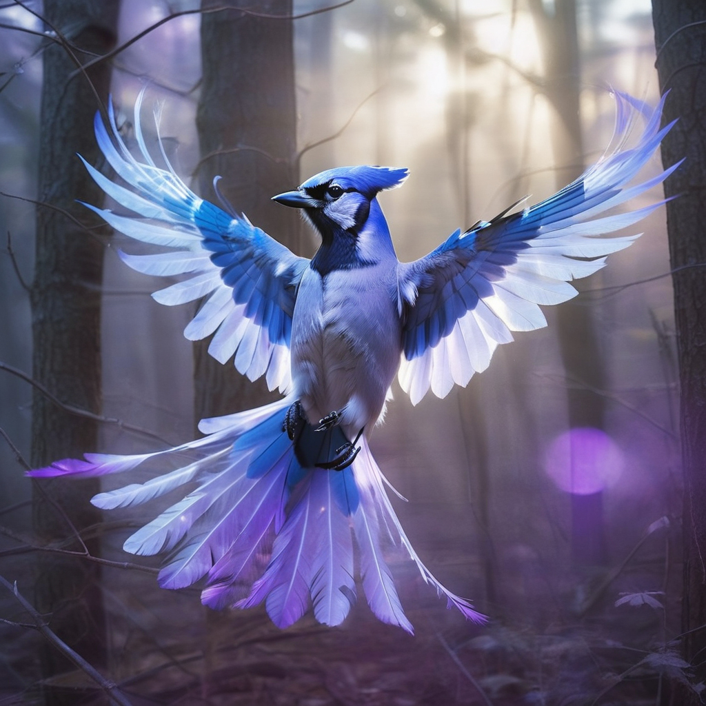

Velandor · Spirit of Veils
A blue-jay shimmer on the edge of sight — the veil that parts and warns.
Appalachian Mystery · Mythic Horror · Thriller
When Dr. Isaac Sands vanishes on a cryptozoological expedition, his son Judah is dragged back to the Smokies—where old legends die hard and the mountains keep their dead close.
"When the Smokies whisper, they do not speak in words — they remember."
Retired Navy investigator Judah Sands returns to Deep Springs, NC after a massacre on his father’s expedition. The trail leads to a cairn that was never meant to be found, a hollow oak whispering in Latin, and a watcher older than the ridgelines.
Each mountain hides a spirit. Each spirit remembers its bloodline.
A blue-jay shimmer on the edge of sight — the veil that parts and warns.
Garnet light in fractured granite; the mountain’s will made manifest.
An older hunger on the ridgeline. Eyes like old gold in the fog.
Soundtracks for the fog, grit, and garnet light.
Join the mailing list for Bloodline updates (no spam, just fog and folklore).